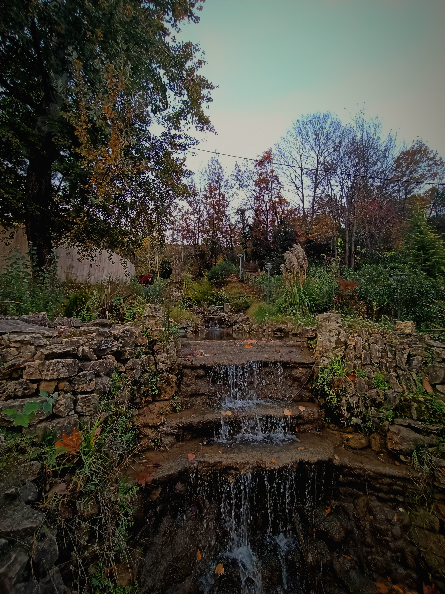
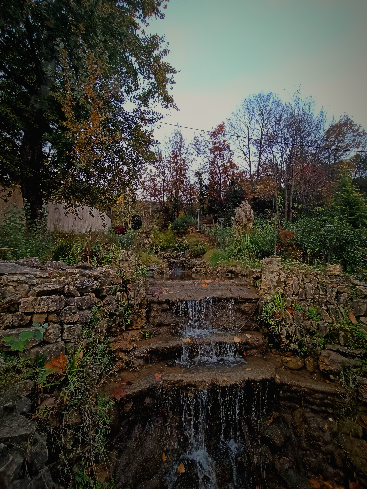
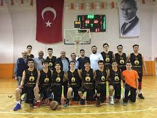
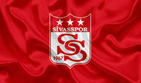

Merhaba ben abdullah hakkı akar gündelik hayatımda kısa oldugu için hakkı ismini kullanıyorum.benim hayatıma bilgisayarın girmesi 5 yaşında gerçekleşti.O günden itibaren sürekli oyun oynayan bir çocuk oldum.Aslında hayatıma bilgisayarın girmesi derslerimi olumsuz etkilesede oyun oynadıkça kendimi mutlu hissediyordum.6 yaşımda metin2 sayesinde okuma yazmayı öğrendim

İlerleyen yaşlarımda doğa fotoğrafları çekmeyi sevdiğimi farkettim tabiki doğa fotoğrafı çekmeyi seviyorsam doğa yürüyüşü yapmayıda seviyorum benim için sakaryayı yazmamın sebeplerinden birisiydi doğa.
 

ilgilendiğim sporlar arasında birinci sırada basketbol geliyor.Sivas Yolspor Kulübü olarak bölge 1.liğimiz var aşşağıdaki resimde mersin türkiye şampiyonasından bir fotoğraf

Sivasspor benim için memleket sevdasıdır acaba sivaslı olduğum içinmi sivassporu tutuyorum bilmiyorum ama futbolu çok sevmesemde sivasspor maçlarına gidip tezahürat etmeyi severim
